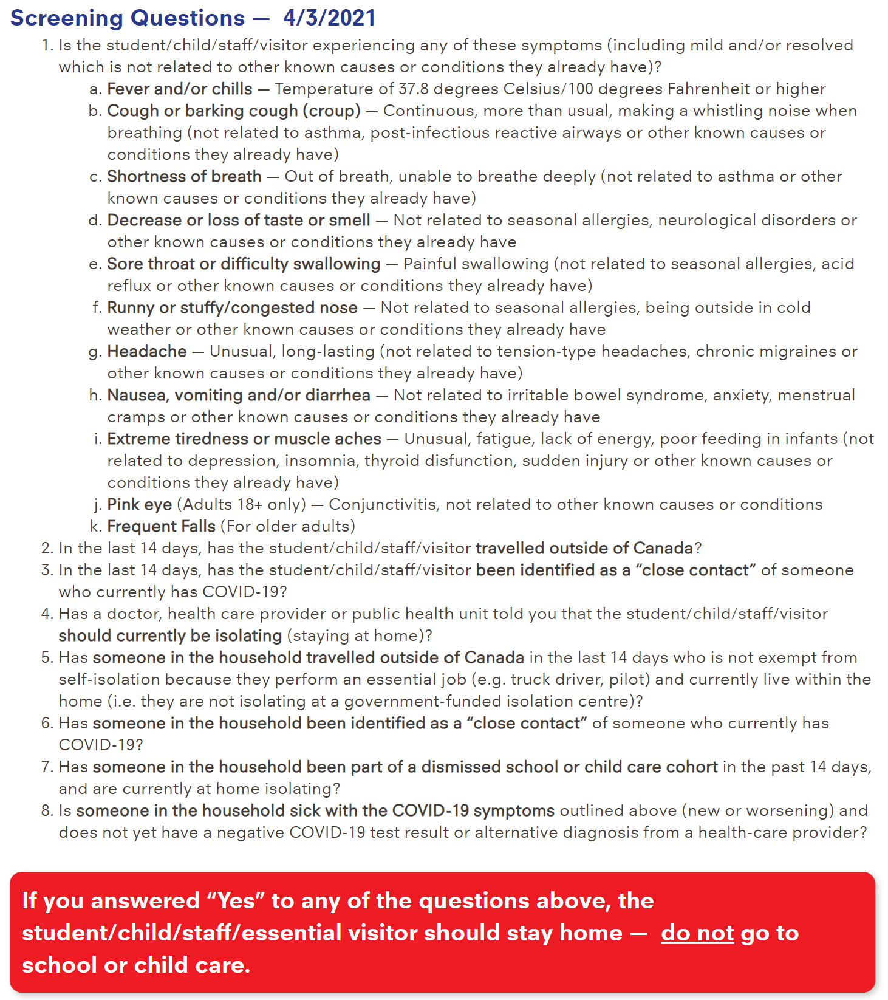

YRDSB EZ-Screen
Step 1
Go through this form below mentally and make sure that zero of the checkboxes apply to you. If you check any of these boxes, DO NOT go to school.
Step 2
Now that you've checked over the PDF, please enter your full name in the form below and check the box. Make sure you are logged into the browser with your GAPPS account (the form won't work otherwise).
Step 3
The final step is to check your GAPPS email for the form confirmation email. It is titled "YRDSB Student Screening Confirmation Form" and should have your form answers in it. Show this email on your phone to the person at your entrance.